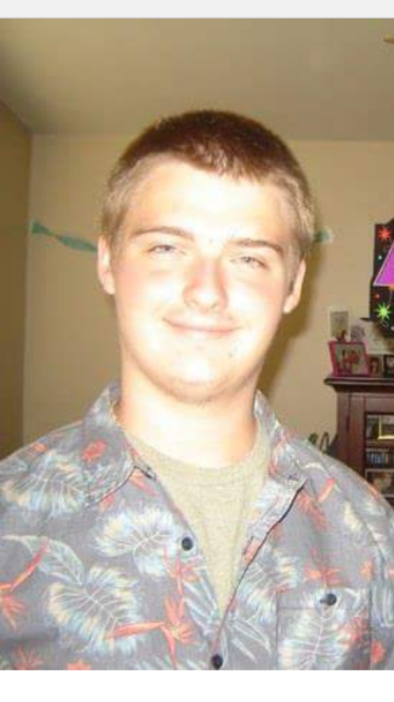

Now this is a story all about how My life got flipped turned upside down And I'd like to take a minute, just sit right there I'll tell you how I became the prince of a town called Bel-Air In West Philadelphia, born and raised On the playground is where I spent most of my days Chillin' out, maxin', relaxin' all cool And all shootin' some b-ball outside of the school When a couple of guys who were up to no good Started makin' trouble in my neighborhood I got in one little fight and my mom got scared And said "You're movin' with your auntie and uncle in Bel-Air" --------------------- (Lol just kidding) Well, there's quite a bit to my story, but to save time, i'll offer a summed up version of such a tale. A story.......about me old bones. I was born in upland around 2000,and moved to chino, growing up here for most of my life, going to briggs up to eighth grade, going into don lugo as a freshman a few years ago. I enjoy gaming, have a dog, and try living my life until the adult world comes in to take most of it away.
